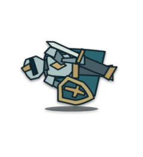

240×264留边导出：八个实际动画位置，本地编码为900ms GIF；末帧停留360ms。循环只是重看同一段记录，不表示复活、新行动或追加伤害。下载GIF · 下载PNG精灵表
边界与来源
小头像及放大视图保持固定画框，倒下结算姿态在320px、390px和桌面检查边界与文字条；其他姿态保持原模型。导出额外留边，保护透明边缘，不把照片裁边当作动作本身。
GIF只有八个采样位置、二值透明和调色板近似；PNG表保留半透明。正式回放仍使用原生矢量与静态记录姿态，GIF不是精确寻帧播放器，900ms也不是战斗实测时间。
本轮由现有SVG渲染采样并本地编码，没有新调用imagegen。原172绘制试作、174挡架受击GIF及背景图片保留。
查看此前挡架受击及绘制风格对照